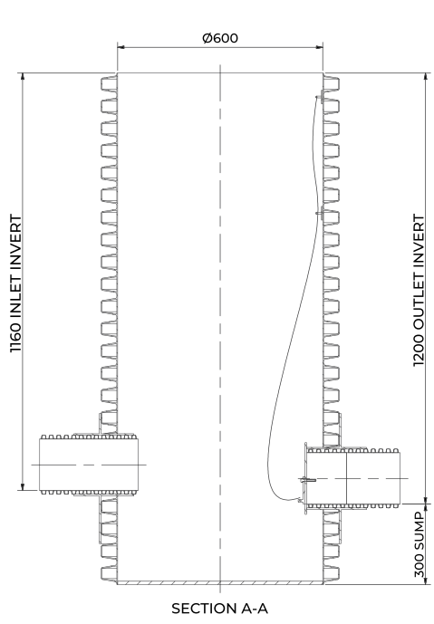
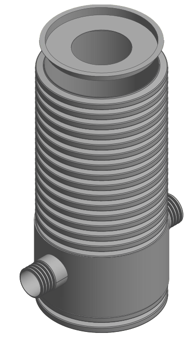
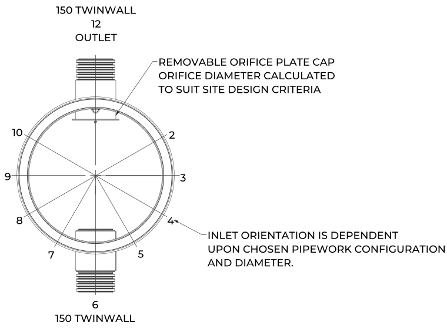
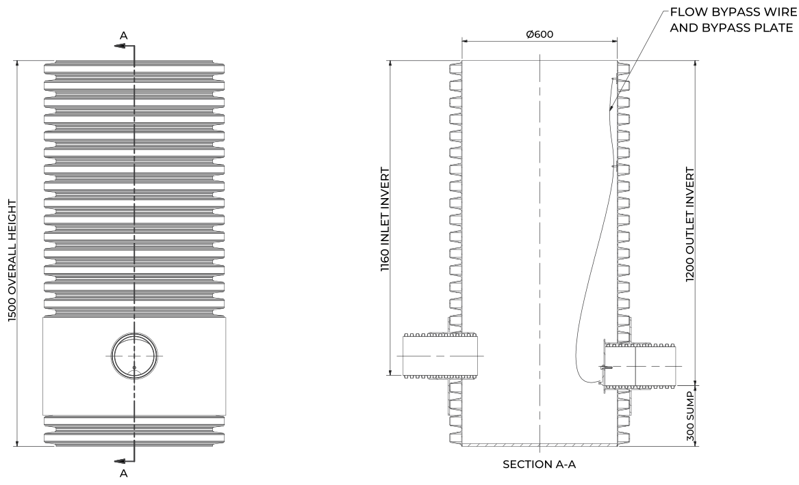

RhinoRoFlo is the orifice flow control chamber in the RHINO range, sold as SERF300, SERF450 and SERF600. A removable orifice plate cap on the outlet restricts the passage of water to a pre-set maximum rate, holding back peak stormwater flow and protecting downstream drainage from overload.
Each unit is delivered factory-fitted as a one-piece HDPE twinwall chamber. A flow bypass wire and bypass plate give an integral drain-down that is operated from ground level, so the chamber can be emptied for servicing without anyone entering it.
SERF300Ø300 mm
SERF450Ø450 mm
SERF600Ø600 mm
How the orifice works
Stormwater enters through the inlet and can only leave through the orifice in the outlet cap. The orifice diameter is calculated from the site design head and the permitted discharge. As the water level rises during a storm, the chamber and upstream network hold the excess and release it at the controlled rate. A 300 mm sump sits below the outlet.
Design compliance
BS EN 13598-2 (2009) plastic inspection chambers
Sewers for Adoption 7th Edition (SfA7)
Design and Construction Guidance (DCG), Type D and E chambers
Building Regulations Part H1
Adoptable and non-adoptable applications

SERF600 section A-A. Dimensions in mm from drawing SERF600150-1.5. Not to scale
Features & benefits
Orifice sized to the site design head
Removable orifice plate cap
Ground-level drain-down via bypass wire and plate
Factory-fitted one-piece unit, no benching or site assembly
Passive control, no power supply
Flexible inlet positions around the clock face
Thermoformed base resists fracture
Light-duty to full-traffic loading
Chamber options
Optional reduction cap with a Ø320 mm opening for restricted access. A bespoke overflow option adds a 110 mm overflow pipe above the orifice for exceedance flows. Standard and custom sump depths are available.
Installation
Installation design should consider traffic loading, ground conditions and variable groundwater levels. If in any doubt consult the scheme designer or engineer. A suitably qualified professional is required to sign off the installation.

SERF600 with optional reduction cap.
Specification
Sizes
SERF300, SERF450, SERF600 (Ø300, 450, 600 mm)
Material
HDPE twinwall, extruded and thermoformed
Control
Removable orifice plate cap, orifice sized to site criteria
Drain-down
Bypass wire and plate, operated from ground level
Sump
300 mm on standard units
Depth
Adoptable up to 2000 mm, non-adoptable up to 3000 mm to pipe soffit
Design input
Design head (m)
01 / 04
RhinoRoFlo
General arrangement - SERF600
Plan view | outlet at 12, inlet at 6

SERF600150-1.5
Chamber
Ø600 mm
Overall height
1500 mm
Inlet
150 twinwall at 6 o'clock
Outlet
150 twinwall at 12 o'clock
Inlet invert
1160 mm below top
Outlet invert
1200 mm below top
Sump
300 mm
Access
Optional reduction cap, Ø320 mm opening
Front elevation and section A-A

Reading the drawing
Drawing SERF600150-1.5 shows a Ø600 chamber with 150 mm twinwall inlet and outlet and a 1.5 m overall height. Invert levels are measured down from the top of the chamber.
The outlet invert sits 40 mm below the inlet invert and 300 mm above the base, leaving the sump below it.
Inlet orientation depends on the chosen pipework configuration and diameter. The orifice diameter is calculated to suit the site design criteria.
Not to scale Reproduced from the SuDS Enviro drawing pack for illustration. Dimensions in millimetres. Confirm project dimensions against the order drawing.
02 / 04
RhinoRoFlo
How it works - orifice, drain-down, overflow
1
Orifice control
The orifice plate is fitted in a removable cap on the outlet. Its diameter is calculated for the site so that, at the design head, discharge does not exceed the permitted rate. There are no moving parts and no power supply in normal operation.
2
Storage and sump
Inflow above the controlled rate backs up in the chamber and the upstream attenuation, then drains down as the storm passes. The sump below the outlet collects silt and debris so they can be removed during routine maintenance.
3
Ground-level drain-down
A flow bypass wire runs from the top of the chamber down to a bypass plate at the outlet. Pulling the wire from ground level opens the bypass so the chamber can be drained for inspection or to clear a blocked orifice, without confined-space entry.
4
Bespoke overflow option
Where exceedance flows must be passed forward, a 110 mm vertical overflow pipe on a support plate rises from the outlet tee. In the example shown (SERF600160-3-6-9-1.5) the overflow top sits 135 mm below the chamber top, above a Ø41 orifice plate with bypass plate and wire.
Not to scale Sections are shown at different scales so each fits the column. Each is one drawn configuration; overall height, pipework and inlet positions are made to order.
Code
Chamber
Drawn pipework
Overall height
Inlet invert
Outlet invert
Sump
SERF300
Ø300 mm
110 EN1401 (150 twinwall, 160 EN1401 optional)
2500 mm
2160 mm
2200 mm
300 mm
SERF450
Ø450 mm
150 twinwall
1000 mm
660 mm
700 mm
300 mm
SERF600
Ø600 mm
150 twinwall
1500 mm
1160 mm
1200 mm
300 mm
Invert levels are measured down from the top of the chamber. SERF300 is built from 300 mm twinwall with a 1 m extension and body coupler.
Installation
Bed and surround to suit the traffic loading and ground conditions
Allow for variable groundwater levels and flotation
Set the outlet to the design invert; the orifice plate is factory-fitted
Keep the bypass wire free and reachable from cover level
Have the installation signed off by a suitably qualified professional
Compliance
BS EN 13598-2 (2009)
SfA7 (Sewers for Adoption)
DCG Type D and E chambers
Building Regulations Part H1
DCG restricted access: max 350 mm opening over 1 m depth
Specify RhinoRoFlo
Send us the design head and our team will return a calibrated unit ready for site.